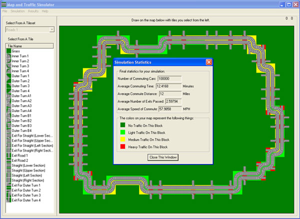

Map and Traffic Simulator:
The Map and Traffic Simulator was built for the Windows platform. It consists of a graphical user interface that allows for the creation of maps through the use of tiles. Tiles are the basic building blocks that are used to construct maps. Individual tiles can be assigned several specific properties to allow them to act as their real-world counterparts would. Traffic simulations can also be designed and tested on existing maps. The finished simulation produces a statistical report and visual representation of its findings. These include information about congestion spots and final statistics from the simulation.
